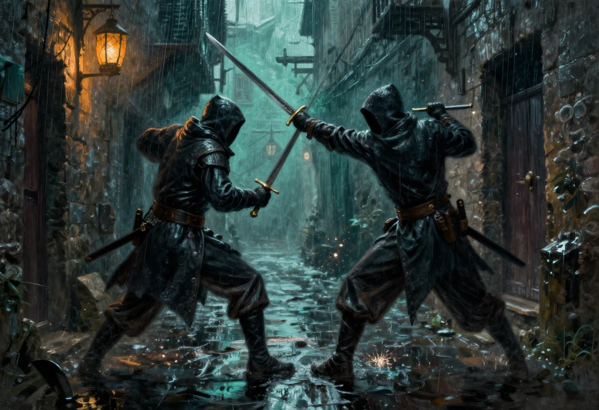

Le livre de base de Nightprowler ne se joue pas en rounds. On annonce ce qu'on fait, le meneur enchaîne, et le combat se règle comme le reste : par une suite d'actions décrites, pas par une grille de cases. C'est très bien en ville, dans une ruelle, quand il s'agit de savoir qui sort son couteau le premier. C'est insuffisant dès que deux lames se croisent, parce qu'un duel demande des réponses précises à trois questions : qui frappe le premier, ce qu'on peut faire dans le temps d'un échange, et ce qui casse.
Les pages qui suivent sont ma version des règles de combat, écrite pour ma table. Elle s'inspire du système proposé par Mathieu Mazzoni, mais le texte, les tableaux et les choix sont de moi. Il y a deux moteurs dans le carton, et je les donne tous les deux parce qu'ils ne servent pas au même moment. Le premier règle le détail, action par action, avec des rangs et des malus. Le second traite une phase entière en un seul jet et laisse au meneur le soin de raconter l'échange. Les deux sont violents. Un combat de Nightprowler ne s'étale pas : il se décide.
Les deux systèmes comptent en phases. Dans le second, une phase vaut cinq secondes. Dans le premier, l'unité est le rang d'action, et le livre de base le définit déjà. Je n'ai pas cherché à fondre les deux mécanismes : ils se contredisent sur la feinte et sur le calcul des dégâts, et une fusion aurait donné un troisième système que personne n'aurait testé. Choisissez-en un avant la partie, pas au milieu du premier sang.
Une arme ne sort pas de sa gaine par la seule volonté. Le temps de la sortir se compte en rangs d'action et s'ajoute à celui de l'attaque.
| Position de l'arme | Coût en rangs |
|---|---|
| Arme prête, en main | 0 |
| Fourreau de manche | 1 |
| Fourreau à la ceinture | 2 |
| En bandoulière | 4 |
Quatre rangs entre un poignard de manche et une épée portée en bandoulière, c'est un échange entier. Un personnage qui se promène les mains vides ne choisit pas le premier coup : il le subit. C'est aussi la raison pour laquelle les voleurs de cette ville portent des lames courtes et des gaines de manche, et pourquoi les gardes s'en méfient.
Une attaque est effective à un rang d'action qui vaut le RA de rapidité, noté RA_RAP dans mon fichier d'origine et calculé à partir de la Rapidité comme dans le livre de base, plus le RA de l'arme, plus le coût pour dégainer. Le RA de l'arme dépend de sa catégorie.
| Catégorie d'arme | RA |
|---|---|
| Arme courte | 1 |
| Arme de jet | 2 |
| Arme moyenne | 2 |
| Arme longue | 3 |
| Arme d'hast | 4 |
| Arme de trait | 4 |
| Arme à mécanisme | 6, 8 ou 10 |
Pour une arme à distance, on ne dégaine pas : RA de rapidité plus RA de l'arme, et c'est tout. Le reste du temps se passe à viser, à armer ou à maudire la corde qui glisse.
Chaque attaque supplémentaire dans la même phase, main par main, coûte 3 points de compétence. Une attaque enchaînée d'une phase sur l'autre part de ces 3 points de malus, et le malus augmente de 1 à chaque nouvelle phase. Pour retrouver une attaque propre, il faut laisser passer trois phases complètes : à la quatrième, le malus est effacé et l'attaque compte comme la première d'une nouvelle série. Un expert, c'est-à-dire un personnage qui a 15 ou plus dans la compétence de l'arme, gagne 1 point d'initiative.
On ne peut faire qu'une esquive, qu'une parade et qu'une attaque par main et par phase. C'est peu, et c'est voulu. La main qui tient l'arme ne peut pas parer et frapper dans le même temps : à chaque phase, il faut choisir entre garder sa lame libre et la planter.
Il existe deux défenses, la parade et l'esquive, et une troisième qui n'en est pas tout à fait une, la contre-attaque. La parade connaît sa forme normale et sa forme totale, l'esquive connaît la feinte de corps et l'esquive proprement dite : leurs effets sont ceux du livre de base, je ne les reproduis pas ici.
La contre-attaque consiste à parer puis à frapper dans le même temps, sans laisser à l'adversaire le loisir de parer à son tour. Les deux jets doivent réussir, celui de la parade et celui de l'attaque. Si l'un des deux échoue, la contre-attaque est perdue et la défense ne vaut rien. La parade doit être totale. On contre-attaque avec l'arme qui vient de parer, ou avec celle de l'autre main si elle est en état de frapper dans cette phase, ou si l'on a volontairement retardé son attaque pour ce moment. Celui qui contre-attaque subit les malus de risque qu'il a pris. Mon fichier d'origine ajoute une phrase que je n'arrive pas à lire sans la tordre : le défenseur subirait, en plus de ces malus, 3 points de pénalité. Je la reproduis telle quelle et je la signale plus bas. La contre-attaque n'échappe pas non plus à la règle des quatre phases de récupération, et peut donc encaisser un nouveau malus de 3.
Le combat à deux armes est toujours possible. La main non directrice prend 2 points de malus en parade et en défense, et la seconde arme 1 point de malus à l'initiative. Mon fichier d'origine précise que ces malus ne comptent pas en défense pour le bouclier ni pour la main gauche : autrement dit, on se protège convenablement de la main faible, on frappe mal de cette main. Un ambidextre ignore l'ensemble.
La taille d'une arme se mesure sur l'échelle qui suit. Elle sert dans les deux systèmes, et c'est elle qui décide si un coutelas peut approcher une hallebarde.
| Arme | Taille |
|---|---|
| Pugilat | 0 |
| Poignard | 1 |
| Épée, hache, masse | 2 |
| Arme à deux mains | 3 |
| Arme d'hast | 4 |
Quand plus d'un point de taille sépare deux armes, le porteur de la plus courte ne peut pas attaquer directement : il doit pénétrer la garde. Il annonce son intention, la tentative prend le rang d'action d'une attaque, il doit réussir une esquive sans malus, et il encaisse une riposte gratuite qu'il doit esquiver à son tour, sous peine d'être blessé comme par un coup de poing.
Une fois la garde pénétrée, les rôles s'inversent : c'est le porteur de l'arme longue qui est gêné. Il doit combattre au pugilat et à l'esquive. Pour repousser l'autre, il doit réussir un jet de pugilat à la place de son attaque. Le jet ne cause pas de dégâts, mais ouvre un duel de Force contre Force. Il peut s'imposer des malus à ce jet, que la Force de l'adversaire réduit si le jet réussit.
C'est la règle la plus intéressante du lot, et la plus mal écrite dans mon fichier d'origine. Elle donne au coutelas une vraie chance contre l'épée à deux mains, à condition d'accepter de se faire toucher pour entrer. Elle est aussi la seule qui oblige un combattant à changer de registre en cours de duel, ce qui, à ma table, a produit les meilleures scènes.
Chaque arme a une résistance. Quand une arme réussit une parade contre une arme lourde, elle peut casser. On jette 1d20 : il faut obtenir un résultat inférieur ou égal à la résistance. La qualité déplace le seuil de 5 points dans un sens ou dans l'autre. La Force de celui qui frappe le réduit encore.
| Force de l'attaquant | Malus à la résistance |
|---|---|
| 15 à 16 | 1 |
| 17 à 18 | 2 |
| 19 à 20 | 3 |
Les seuils conseillés sont de 8 à 10 pour les armes légères et de 13 à 15 pour les plus lourdes. En dessous, on ne pare pas avec une dague : on la sacrifie. Une lame de qualité, entretenue, vaut mieux qu'un bras courageux, et c'est peut-être la seule leçon morale de ce chapitre.
| Attaque | Effet |
|---|---|
| Attaque en force | Réservée aux armes tranchantes ou pointues. Chaque point de malus à la compétence donne 1 point de dégâts létaux en plus et 1 point de dégâts contondants en moins. Plafond de 3 points avec une arme à une main, de 6 avec une arme à deux mains. L'attaquant avance d'un mètre ; si le défenseur ne peut pas reculer, il subit 2d3 points de fatigue. |
| Assommer | Réservée aux armes contondantes. Même principe, inversé : chaque point de malus donne 1 point de contondants en plus et 1 point de létaux en moins, avec les mêmes plafonds. |
| Feinte | Réservée aux experts. L'action est décalée de 2 rangs, l'attaque gagne 2 points. |
| Prise de risque | L'attaquant s'impose X points de malus à son attaque, et le défenseur encaisse les mêmes X points. |
Assommer ne se confond pas avec l'attaque en force, et la distinction compte : une massue qui cherche à tuer ne laisse pas de témoin, une massue qui cherche à étourdir laisse un prisonnier. Le choix se fait avant le jet, pas après.
Une chute peut être atténuée par un jet d'acrobatie, si le meneur l'autorise, avec les modificateurs qu'il juge utiles. Sur une esquive réussie, on peut déséquilibrer l'adversaire : le faire tomber dans un trou, ou lui ajouter 1d6 points d'initiative. La réussite critique est sur 1, l'échec critique sur 20.
Ce dernier point vaut ce qu'il vaut : le second système, plus loin, supprime purement et simplement les critiques. Je le signale plutôt que de trancher, parce que les deux règles viennent du même carton.
Ces règles cassent le parti pris du livre de base de ne pas jouer en rounds, et elles l'assument. Le combat est découpé en phases de cinq secondes. Un jet sous la compétence d'arme ne représente plus une attaque et une parade, mais un enchaînement complet, dont le résultat des dés ne donne que la fin. C'est au meneur de raconter le reste, avec fougue.
Le but n'est pas de faire durer. Un combat réglé par ces règles dépasse rarement trois ou quatre phases, et c'est voulu. Elles sont faites pour des tables qui veulent décrire leurs combats avec emphase, pas pour celles qui veulent les gagner à l'usure.
Le calcul reste celui du livre de base, mais l'initiative n'ouvre plus de rang : elle donne un avantage. Le personnage le plus rapide, celui qui a le plus petit score, gagne 1 point à son score de combat par tranche complète de 2 points d'écart avec son adversaire, pour ce combat et contre cet adversaire seulement. Mon fichier d'origine donne un écart de 1 contre 11 et un bonus de 5. Je reproduis l'exemple en signalant qu'il suppose une échelle que le livre de base ne donne pas, où l'initiative se calcule sur la Rapidité et tourne autour de 3 pour 12. À vérifier sur votre feuille avant de l'appliquer.
Le tableau des tailles est le même que plus haut. L'écart entre deux armes donne un bonus au porteur de la plus longue et, au-delà d'un point, un malus au porteur de la plus courte.
| Écart de taille | Arme longue | Arme courte |
|---|---|---|
| 1 | +2 | 0 |
| 2 | +2 | -2 |
| 3 | +3 | -4 |
| 4 | +3 | -6 |
Exemple de mon fichier : une rapière contre une épée à deux mains, l'arme à deux mains gagne 2 points pour toucher. La rapière compense par sa vitesse, c'est-à-dire par son initiative. C'est le seul endroit du système où la vitesse reprend ce que l'allonge a pris.
| Force | Bonus aux dégâts |
|---|---|
| 15 à 16 | +1 / +1 |
| 17 à 18 | +2 / +2 |
| 19 à 20 | +3 / +3 |
La compétence utilisée est la moyenne des deux armes. Les combinaisons donnent un bonus au porteur et un malus à l'adversaire.
| Combinaison | Effet |
|---|---|
| Deux armes | 2 points de bonus au porteur, 2 points de malus à l'adversaire. |
| Arme et main gauche | 1 point de bonus au porteur, 3 points de malus à l'adversaire. |
| Arme et bouclier | Aucun bonus au porteur, 4 points de malus à l'adversaire. |
Exemple de mon fichier : un personnage à deux haches contre un adversaire à l'épée et au bouclier. Le premier a 2 points de bonus pour ses deux armes et 4 points de malus pour le bouclier adverse, soit 2 points de malus. Le second aurait, selon le même calcul, 2 points de bonus et aucun malus, ce qui ne cadre pas avec la règle du bouclier. Je laisse l'exemple tel quel et je retiens la règle : le bouclier ne donne rien à son porteur, il retire 4 points à l'autre.
Un combattant peut renoncer à attaquer pour se protéger, ou renoncer à se protéger pour tuer. Les deux choix se paient.
| Posture | Effet |
|---|---|
| Défense totale | 3 points de bonus au score de combat, mais aucun coup porté. Le bonus monte à 5 contre une attaque mortelle et tombe à 1 contre une feinte. |
| Attaque mortelle | Le combattant ne se défend pas. 2 points de malus contre un adversaire en défense totale, 1 point de malus contre un adversaire normal, 5 points de bonus contre un adversaire qui attaque lui aussi à mort. Les dégâts qui passent l'armure sont doublés. |
Le face-à-face de deux attaques mortelles, que mon fichier appelle un combat de sourd ou de bourrin, est la situation la plus rapide du jeu : les deux touchent, les deux doublent, et il reste rarement quelqu'un pour raconter.
La feinte du second système n'a rien à voir avec celle du premier. Elle est réservée aux experts. Le combattant s'impose X points de malus à son attaque, et ce malus s'applique à l'adversaire. Si les deux feintent, c'est le plus gros malus qui l'emporte. On peut feinter pour placer une attaque mortelle.
Pour désarmer, il faut réussir une défense totale sans bonus, puis gagner un duel de Force contre Force ou d'Adresse contre Adresse, selon la méthode employée. Pour fuir, il faut réussir une défense totale et une esquive. Deux jets, pas un : on ne tourne pas les talons entre deux coups sans avoir paré le premier.
Le score pour assommer se calcule ainsi : 10 pour tout le monde, modifié par la différence entre la Force de celui qui frappe et l'Endurance de celui qui prend le coup. Les bonus de dégâts dus à la Force s'ajoutent, les dégâts de fatigue de l'arme aussi, l'armure de tête se retranche. Un expert ajoute 3. Attaquer de dos ajoute 2, une cible immobile ajoute 2. Le test réussi, la cible est assommée.
Exemple de mon fichier : un voleur arrive derrière un garde qui ne l'a ni vu ni entendu. Base 10, massue 1 point de fatigue, expert 3, de dos 2, immobile 2, Force 10 contre Endurance 12 donc 2 points de malus, casque 1 point de malus. Total 15. Il faut faire 15 ou moins.
Chaque combattant jette sous sa compétence d'arme, qui reste celle du livre de base. Le résultat se lit ainsi.
| Jets | Résultat |
|---|---|
| Échec et échec | Rien. On décrit les attaques et les parades, personne ne se blesse. |
| Échec et réussite | Celui qui réussit inflige son score de compétence, après feinte ou attaque mortelle, plus les bonus de Force et d'arme, moins l'armure. |
| Réussite et réussite | Celui qui a fait le plus haut jet, donc celui qui s'est le plus rapproché de son score, ajoute la différence entre les deux jets à ses dégâts. |
| Égalité | Les deux blessent, et celui qui a le plus haut score de compétence ajoute la différence de compétence. |
| Égalité parfaite | Les deux blessent, sans bonus. |
Exemple : A fait 16, B fait 14, tous deux ont 18 en compétence. A ajoute 2. Autre exemple : C fait 14 avec 14 en compétence, B fait 14 avec 18. Les deux blessent, B ajoute 4.
Il n'y a pas de réussite ni d'échec critique dans ce système. Mon fichier le dit explicitement, et l'explique par la violence déjà suffisante des règles.
À la fin de chaque phase, l'arme la plus légère teste sa résistance, parce qu'elle a certainement paré. Les seuils conseillés restent 8 à 10 pour les armes légères, 13 à 15 pour les plus lourdes.
Un personnage qui choisit l'esquive fait la moyenne de sa compétence d'arme et de son esquive. En échange, il ne teste pas la résistance de son arme en fin de phase : il évite les coups au lieu de les arrêter. C'est le seul moyen de combattre longtemps avec une lame fragile.
On divise par 3 le score de fatigue et le score de santé : on obtient les seuils de résistance.
| Niveau | Effet |
|---|---|
| Avant le premier seuil | 1 point de malus aux compétences pour un tour. |
| Premier seuil | 2 points de malus jusqu'aux soins. |
| Deuxième seuil | 4 points de malus jusqu'aux soins. |
| 0 en blessure ou en fatigue | Coma, évanouissement. |
| Un seuil en négatif | Mort instantanée. |
Exemple : un personnage a 21 en blessure, son seuil est 7. De 1 à 6 points, la douleur lui inflige 1 point de malus pour une phase. De 7 à 13, 2 points. De 14 à 20, 4 points. À 0, il tombe hors de combat.
Une phase de visée donne 3 points. La distance et le mouvement de la cible donnent des malus. Toucher se joue sous la compétence modifiée. Les dégâts valent le score du d20, plus les dégâts de l'arme, moins l'armure. À bout portant, 3 points de bonus. Viser la tête ou le cou coûte 5 points, et les dégâts qui passent l'armure sont doublés.
Pour la cadence, on divise le score d'initiative de l'arme par 5. Le résultat donne le nombre de phases entre deux tirs. Un arc à 12 tire toutes les deux phases. Une arbalète lourde à 40 tire toutes les huit. Pour les sorts, la conversion est plus délicate : la phase du livre de base vaut un quart de seconde, donc un temps de lancement de 2 vaut une demi-seconde, et l'on pourrait lancer dix fois dans une phase de cinq secondes. Mon fichier le dit sans broncher. Je le signale avant que quelqu'un ne joue un mage avec cette règle.
Dans ma version, le score de moralité est devenu un score de volonté. Il sert à résister à la peur et aux sorts d'emprise. On peut lui demander davantage : chaque jour, un jet sous la volonté, et chaque tranche de 5 points sous le score, complète ou non, donne 1 point de bonus pour la journée. Ces points ne se cumulent pas d'un jour sur l'autre. Ils servent une seule fois chacun, sur une action, mais peuvent être fractionnés. Une action, c'est un combat, un cambriolage, une évasion.
Exemple de mon fichier : volonté 10, jet de 3, donc 7 points d'écart, soit une tranche complète et une tranche entamée, donc 2 points de bonus. Le personnage peut les dépenser en une fois pour 2 points sur une action, ou en deux fois pour 1 point sur deux actions.
Je n'ai pas comblé les trous, parce qu'un trou comblé sans test est une règle inventée. Voici ceux que j'ai rencontrés, dans l'ordre où ils gênent.
| Point | Ce qui ne tient pas |
|---|---|
| La feinte | Deux règles différentes selon le système, qui ne se réconcilient pas : d'un côté un décalage de 2 rangs contre 2 points d'attaque, de l'autre un malus transféré à l'adversaire. |
| L'exemple des deux armes | Le calcul ne tombe pas juste pour le second combattant. |
| L'initiative de l'exemple | 11 ne correspond pas à l'échelle du livre de base, où 12 de Rapidité donne 3 d'initiative. |
| Le malus de la main non directrice | La phrase sur le bouclier et la main gauche peut se lire de deux façons. J'ai retenu la plus charitable. |
| La contre-attaque | La pénalité de 3 est attribuée au « défenseur » sans qu'on sache si c'est le contre-attaquant ou son adversaire. |
| La poussée au pugilat | Des malus réduits par la Force de l'adversaire, sans dire comment on les calcule. |
| Les dégâts du coup de poing | Jamais donnés, alors que la pénétration de garde y renvoie. |
| Le premier seuil de blessure | Tantôt un tour, tantôt une phase. |
| La conversion des sorts | Dix projectiles ardents en cinq secondes, ce qui est un choix de vie. |
Rien de tout cela n'empêche de jouer. Cela empêche seulement de promettre un équilibre. Ces règles sont violentes, rapides et imparfaites, et c'est précisément pour cela qu'elles tiennent sur une page de carnet plutôt que dans un manuel.
Ma version des règles de combat, écrite pour ma table et inspirée du système proposé par Mathieu Mazzoni. Le texte, les tableaux, les exemples et les remarques sont de moi ; la mécanique d'origine doit beaucoup à Mazzoni. Version provisoire : plusieurs points signalés plus haut demandent encore un test, et je n'ai pas retrouvé les notes de partie qui permettraient de trancher. Cette page sera révisée le jour où je les remets la main dessus.